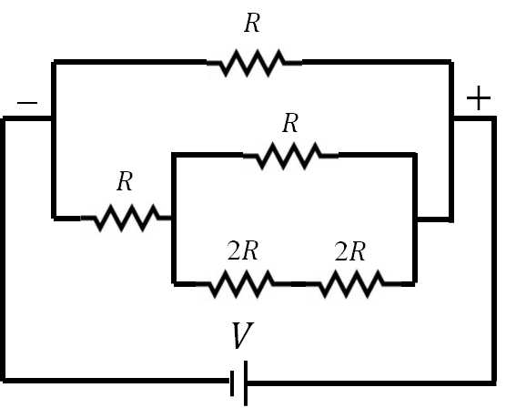
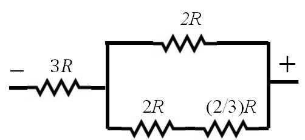
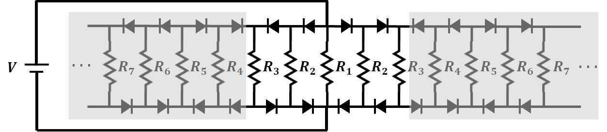
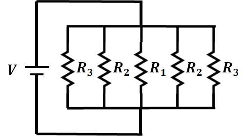
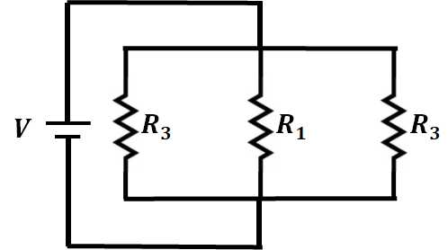

해설 2
[문항해설]
(문제2-1) 직류 회로에서 a와 b의 스위치가 각각 연결됨에 따라 회로를 재구성하고 직렬과 병렬의 저항값을 각각 구하는 문제임.
(문제2-2) 다이오드의 정류 작용을 이해하고 \(n\)이 3이하인 회로에만 전류가 흐른다는 것을 이용해 회로를 재구성해서 직류 회로의 저항을 계산하는 문제임.
(문제 2-1) [10점]
1) 스위치가 \(a\)에 연결될 때 회로는 다음과 같이 계산이 용이하게 재구성될 수 있다. \(3R\) 저항은 은 한쪽이 연결되어 있지 않으므로 고려할 필요가 없다.

전체 저항값은 다음과 같이 구할 수 있다.
\[\frac{1}{R_a} = \frac{1}{R} + \frac{1}{\left(R + \frac{4}{5}R\right)} = \frac{14}{9R}\]
\[\therefore R_a = \frac{9}{14}R\]
2) \(b\)로 연결되었을 경우 회로는 아래와 같이 재구성된다.

위 회로는 아래와 같은 회로가 되고
\[3R + (8/7)R\]
가 되므로 전체저항은 다음과 같다.
\[\therefore R_b = \left(3 + \frac{8}{7}\right)R = \frac{27}{7}R\]
(문제 2-2) [10점]
다이오드의 정류 작용에 의해 \(n \geq 4\) 인 저항에는 전류가 흐르지 않고 차단된다.

따라서 문제의 회로는 총 5개의 저항의 병렬 연결로 아래와 같이 간단히 표현된다.

가) 5개의 저항이 병렬로 연결되어 있는 회로에서의 전체 저항값은 아래와 같다.
\[\frac{1}{R_T} = \frac{1}{R_1} + \frac{2}{R_2} + \frac{2}{R_3} = \frac{1}{10} + \frac{2 \times 2}{10} + \frac{2 \times 3}{10} = \frac{11}{10}\]
\[\therefore R_T = \frac{10}{11}\,\Omega\]
나) 위의 회로에서 짝수항의 저항을 제거했으므로 회로는 더 간단해 진다.

위와 같이 3개의 저항이 병렬로 연결되어 있는 회로에서의 전체 저항값은 아래와 같다.
\[\frac{1}{R_T} = \frac{1}{R_1} + \frac{2}{R_3} = \frac{1}{10} + \frac{2 \times 3}{10} = \frac{7}{10}\]
\[\therefore R_T = \frac{10}{7}\,\Omega\]